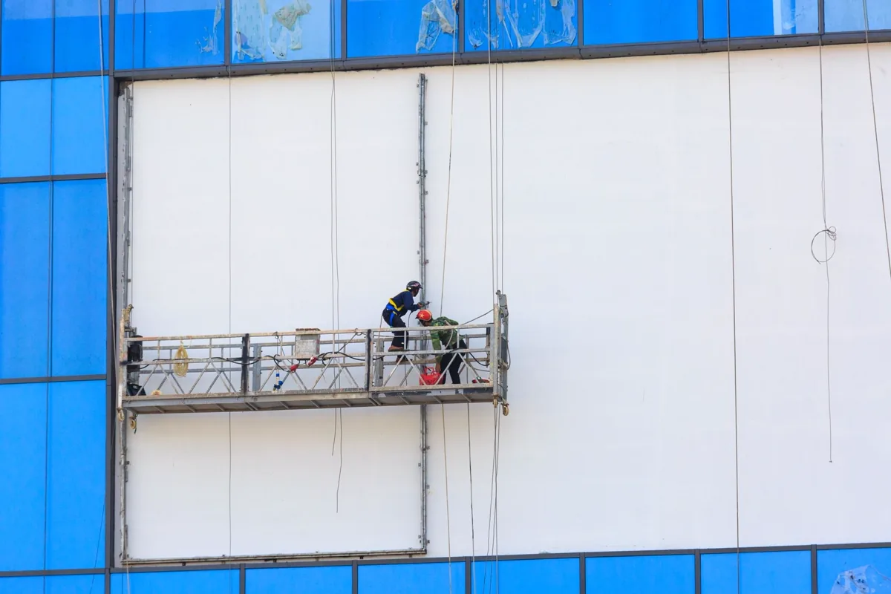
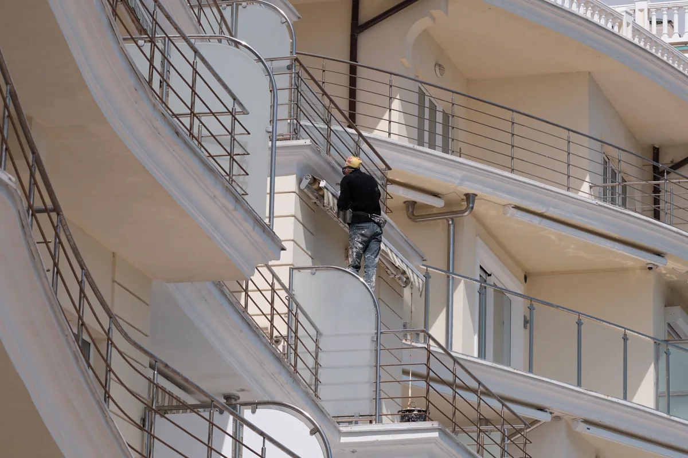

Fachada no litoral envelhece mais rápido
Maresia, insolação intensa e chuva de vento formam a combinação que mais castiga fachada na Grande Vitória. O sal acelera a corrosão da armadura, a variação térmica trabalha o revestimento, e a água encontra qualquer junta mal vedada. O resultado aparece em ordem previsível: mancha, bolor, fissura, revestimento oco, pastilha caindo, ferragem exposta.
Recuperar fachada é resolver a causa antes do acabamento. Repintar sobre substrato úmido ou sobre revestimento descolado é jogar dinheiro fora — o problema volta, e volta mais caro.
Etapas da recuperação
Vistoria e mapeamento de patologias
Inspeção da fachada com registro fotográfico, teste de percussão para localizar revestimento oco, mapeamento de fissuras com abertura medida, verificação de juntas, peitoris, rufos e esquadrias e identificação de pontos de infiltração. O resultado é um mapa de danos por pano, que é o que permite orçar de verdade. Quando há concreto deteriorado e armadura exposta, o diagnóstico segue o descrito em patologias e corrosão estrutural.
Tratamento das causas
Correção da origem da infiltração, calafetação de juntas e de esquadrias, recomposição de peitoril e pingadeira, tratamento de fissuras conforme sua natureza — ativa ou estabilizada — e recuperação de concreto com remoção do material solto, limpeza e passivação da armadura e reconstituição com argamassa de reparo estrutural.
Revestimento
Reassentamento pontual ou remoção de panos com descolamento generalizado, reconstituição de emboço, aplicação de revestimento novo ou substituição por sistema de menor risco de queda. Em fachada com histórico de desprendimento, a decisão entre recuperar e substituir é técnica, não estética.
Impermeabilização
Impermeabilização de fachada, floreiras, marquises, lajes de cobertura e áreas molhadas, com sistema compatível com o substrato e com a movimentação prevista. Detalhe de arremate em ralo, rodapé e junta é onde a impermeabilização costuma falhar.
Lavagem e pintura
Lavagem com pressão controlada — pressão alta demais arranca rejunte e satura o substrato —, remoção de fungo e de sal depositado, preparo, selagem e pintura com sistema adequado à exposição. Respeitamos o tempo de secagem do substrato antes de pintar; é o passo que mais se pula e o que mais causa descascamento precoce.
Reformas prediais em geral
Também executamos reformas de área comum, telhado e cobertura, áreas molhadas, pintura interna, troca de revestimento e adequações — muitas vezes junto do plano de manutenção predial e do laudo de acessibilidade.

Trabalho em altura: o que exigir de quem for executar
Fachada é obra de risco. Antes de assinar contrato, o síndico ou o gestor predial deveria exigir estes itens — todos previstos na NR-35 e na NR-18:
- Análise de risco específica da obra e permissão de trabalho emitida;
- Capacitação NR-35 válida e aptidão em exame médico de cada trabalhador;
- Sistema de ancoragem verificado por engenheiro, com ART — ponto de ancoragem improvisado em caixa d'água ou em tubulação é causa recorrente de acidente fatal;
- Balancim ou cadeira suspensa com inspeção documentada e cabo em condição;
- Proteção de pedestres na via e nas entradas, com bandeja e sinalização;
- Seguro e responsabilidade civil da executante;
- ART de execução registrada no CREA-ES.

Patologias de fachada e o que costuma estar por trás
| Sintoma na fachada | Causa provável |
|---|---|
| Pastilha ou cerâmica caindo | Descolamento por falha de aderência, movimentação térmica e ausência de junta |
| Mancha escura vertical sob janela | Peitoril sem caimento ou sem pingadeira, escorrendo água na parede |
| Bolor e esverdeamento | Umidade permanente, pouca insolação e superfície porosa sem selagem |
| Fissura mapeada em toda a superfície | Retração de argamassa ou de pintura, geralmente superficial |
| Trinca diagonal partindo de canto de janela | Movimentação estrutural ou recalque — exige investigação antes de tapar |
| Concreto destacado com ferragem à vista | Corrosão de armadura por carbonatação ou por cloretos da maresia |
| Infiltração em apartamento de canto | Junta de esquadria, fissura em pano cego ou impermeabilização vencida |
| Eflorescência esbranquiçada | Água percolando pela alvenaria e carregando sais para a superfície |
Perguntas frequentes sobre recuperação de fachada
De quanto em quanto tempo a fachada precisa ser recuperada?
Não existe prazo fixo: existe estado. Na faixa litorânea da Grande Vitória, com maresia e insolação forte, é comum que a pintura precise de renovação a cada cinco a oito anos e que a fachada peça uma inspeção detalhada a cada três a cinco anos. O que define a intervenção é o resultado da vistoria — percentual de revestimento oco, extensão de fissuras, estado das juntas e presença de corrosão de armadura. Prédio que só repinta sem tratar o que está por baixo repinta de novo em pouco tempo.
Por que a pintura da fachada descasca pouco tempo depois?
Quase sempre por umidade retida no substrato ou por preparo insuficiente. As causas mais comuns são pintar sobre superfície úmida ou com fungo vivo, não tratar a origem da infiltração antes, deixar juntas e esquadrias sem calafetação, usar tinta incompatível com o substrato ou com a exposição, e aplicar demão sobre demão sem respeitar o intervalo. Em fachada litorânea, sal depositado não removido na lavagem também impede a aderência.
Recuperação de fachada precisa de projeto e de ART?
Precisa. É obra em altura, com risco a terceiros na via pública, e envolve intervenção em elementos que podem ter função estrutural — como peças de concreto aparente com armadura corroída. Exige responsável técnico, ART registrada, plano de trabalho em altura conforme a NR-35, isolamento e proteção de pedestres. Condomínio que contrata apenas por preço, sem responsável técnico, assume risco civil e criminal se cair material na calçada.
Dá para fazer a obra com o prédio ocupado?
Sim, e é o caso mais comum. A obra é planejada em panos e por fachada, com cronograma comunicado aos moradores, isolamento e proteção de circulação, horário definido para serviços ruidosos e aviso prévio para os apartamentos afetados a cada etapa. O que não se negocia é a proteção de pedestres na via e a sinalização, que são obrigatórias durante toda a obra.
Como saber se o revestimento cerâmico está soltando?
Pelo teste de percussão: percorre-se a fachada batendo levemente na superfície e o som oco indica descolamento entre a peça e o substrato. O mapeamento resultante mostra a extensão e a distribuição do problema, o que define se a solução é reassentamento pontual, remoção de panos inteiros ou substituição completa do revestimento. Pastilha caindo de altura é risco de acidente grave, e o mapeamento é o que separa manutenção programada de emergência.
Recuperação de fachada na Grande Vitória
Obras em edifícios residenciais, comerciais e industriais nas cidades da região:
Fachada com pastilha caindo ou infiltração?
Mande fotos e o endereço. Fazemos a vistoria com mapeamento e retornamos com escopo e estimativa.